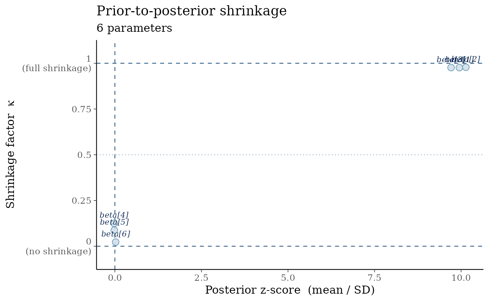
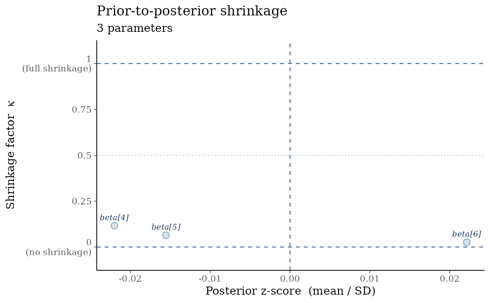

Plots the shrinkage factor against the posterior z-score for each parameter. Shrinkage quantifies how much the posterior has contracted relative to the prior: \(\kappa \approx 1\) means the data are highly informative for that parameter; \(\kappa \approx 0\) means the posterior barely updated from the prior.
This diagnostic is especially useful in regularized regression and hierarchical models where some parameters may be weakly identified, and as part of simulation-based calibration (SBC) workflows.
Usage
mcmc_shrinkage(
x,
prior_sd = NULL,
prior_draws = NULL,
pars = NULL,
point_size = 3,
label_size = 3
)Arguments
- x
A numeric matrix of posterior draws with dimensions [iterations × parameters]. Column names are used as parameter labels. A data frame will be coerced to a matrix.
- prior_sd
A numeric vector of prior standard deviations, one per parameter. Recycled to
ncol(x)if scalar. Eitherprior_sdorprior_drawsmust be supplied.- prior_draws
An optional numeric matrix of prior draws with the same column structure as
x. Use this when closed-form prior SDs are unavailable. If bothprior_sdandprior_drawsare supplied,prior_drawstakes precedence.- pars
Optional character vector of parameter names to display. Names must match column names of
x. IfNULL(default), all parameters are shown.- point_size
Numeric. Size of plotted points. Default
3.- label_size
Numeric. Text size for parameter labels (in mm). Default
3. Set to0to suppress labels.
Value
A ggplot2::ggplot object. The plot can be further customized
with standard ggplot2 layers and
bayesplot::bayesplot_theme_set().
Details
The shrinkage factor for parameter \(\theta\) is defined as:
$$\kappa_\theta = 1 - \frac{\widehat{\operatorname{Var}}(\theta \mid y)}
{\widehat{\operatorname{Var}}(\theta)}$$
where the numerator is the sample variance of the posterior draws and the
denominator is the prior variance (supplied via prior_sd or estimated from
prior_draws). Values are clamped to [0, 1].
The z-score is the ratio of the posterior mean to the posterior SD: $$z_\theta = \frac{\bar{\theta}_{\text{post}}} {\widehat{\operatorname{SD}}(\theta \mid y)}$$ serving as a signal-to-noise measure. Parameters with \(|z| > 2\) and high \(\kappa\) are well-identified. Parameters with low \(\kappa\) regardless of z-score suggest weak identifiability or near-prior posteriors.
Reference lines are drawn at \(\kappa \in \{0, 0.5, 1\}\) and at \(z = 0\).
References
Piironen, J. and Vehtari, A. (2017). Comparison of Bayesian predictive methods for model selection. Statistics and Computing, 27(3), 711–735. doi:10.1007/s11222-016-9649-y
Betancourt, M. and Girolami, M. (2015). Hamiltonian Monte Carlo for hierarchical models. Current Trends in Bayesian Methodology with Applications, 79(30), 2–4.
See also
compute_shrinkage() for computing shrinkage factors without
plotting; bayesplot::mcmc_areas() for marginal posterior visualization.
Examples
set.seed(42)
n_iter <- 1000
# Six parameters: first three have high shrinkage (informative data),
# last three have low shrinkage (weakly identified / near-prior)
posterior <- matrix(
c(rnorm(n_iter * 3, mean = 1.5, sd = 0.15), # high shrinkage
rnorm(n_iter * 3, mean = 0.0, sd = 0.95)), # low shrinkage
ncol = 6
)
colnames(posterior) <- paste0("beta[", 1:6, "]")
mcmc_shrinkage(posterior, prior_sd = 1)
# Using prior draws instead of closed-form prior SDs
prior_draws <- matrix(rnorm(n_iter * 6, sd = 1), ncol = 6)
colnames(prior_draws) <- colnames(posterior)
mcmc_shrinkage(posterior, prior_draws = prior_draws)

# Select a subset of parameters
mcmc_shrinkage(posterior, prior_sd = 1, pars = paste0("beta[", 4:6, "]"))
